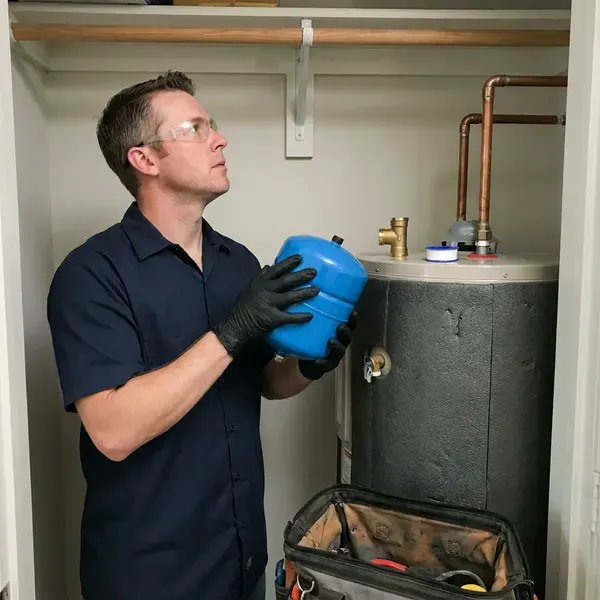
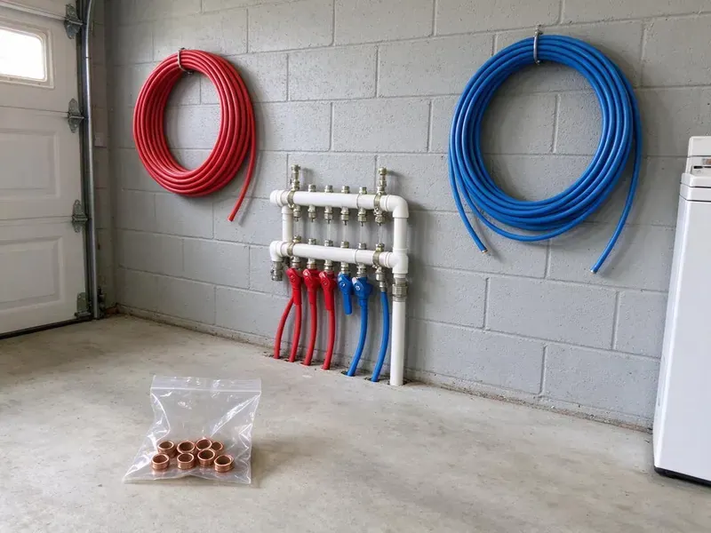

Water Heater Expansion Tank Installation in Milwaukee, WI
HKV Plumbing provides expert water heater expansion tank installation throughout Milwaukee, WI to prevent pressure damage.
- Fast, Reliable Service
- Precharged to Your Pressure
- Code Compliant
- Upfront Pricing

Expert Expansion Tank Installation for Your Home in Milwaukee, WI.
Call now and we will check your pressure, size the right tank and install it the same day most of the time.
Your Go-To for Water Heater Expansion Tank Installation in Milwaukee, WI
HKV Plumbing sees many homes with high incoming pressure and pressure regulators that create closed systems. When water heats from about 60 to 120 degrees, it expands and has nowhere to go without an expansion tank. We install the tank securely on the cold supply and confirm the system holds steady through a full heating cycle.
Our expertise includes:
- Professional installation for all water heater types
- Making sure of compliance with all local plumbing codes.
- Precise expansion tank sizing and installation.

Additional Plumbing Installation Services in Milwaukee, WI
We install water heaters, pumps, lines, and fixtures across Milwaukee, WI with precision workmanship that meets every local code.


Customers
Why Choose HKV Plumbing for Water Heater Expansion Tank Installation in Milwaukee, WI?
An expansion tank is a small part that does a big job, but only if it is sized and charged correctly. We take the time to measure your pressure instead of installing whatever tank is on the shelf.
- Prevent Leaks, It lowers the risk of leaks and bursts caused by high pressure, saving you from potential water damage.
- System Protection, An expansion tank absorbs excess water pressure, relieving strain on your water heater and pipes.
- Water Heater Lifespan, By smoothing out pressure swings, an expansion tank can significantly extend the life of your water heater.
Citywide Coverage
Every neighborhood in Milwaukee has homes with pressure regulators that create closed systems, and we serve all of them. We also install expansion tanks for townhomes, condos and small commercial buildings.
Experienced Team
Our team includes highly trained, licensed plumbers with extensive experience in water heater expansion tank installation. They stay current on the latest Wisconsin plumbing codes and best practices.
Safety-First Approach
Our careful approach means your expansion tank is installed correctly, preventing hazards and protecting your home's plumbing system from excessive pressure.
Trusted Certified Milwaukee Plumbing Services Professionals
At HKV Plumbing, we take pride in providing certified plumbing services throughout Milwaukee, WI. Backed by leading industry credentials, our experienced plumbers combine technical skill with genuine customer care. Whether it is repair, installation, or maintenance, we follow strict safety and quality standards to deliver lasting results you can trust.
Call Us Now PHCC Plumbing Contractor Recognition
PHCC Plumbing Contractor Recognition Better Business Bureau (BBB) Accreditation
Better Business Bureau (BBB) Accreditation Angi Certified Pro
Angi Certified Pro ISO 9001 Quality Management Certification
ISO 9001 Quality Management CertificationReliable Water Heater Expansion Tank Installation Services in Milwaukee, WI
Tank Sizing and Placement in Milwaukee
Correct sizing and placement are key to an effective water heater expansion tank in Milwaukee. An undersized tank will not provide adequate protection, while an oversized one is an unnecessary expense. We accurately calculate the required tank volume based on your water heater's capacity, system pressure and average water temperature. Placement matters too, usually near the water heater on the cold water inlet line, with easy access for future maintenance or inspection.

Expansion Tank Replacement in Milwaukee, WI
Expansion tanks wear out over time as the internal bladder or diaphragm fails and the tank fills with water. A waterlogged tank feels heavy, and tapping it produces a dull sound all the way up instead of a hollow top. Pressing the air valve and getting water instead of air is a clear sign it has failed. We replace failed tanks with a correctly sized new unit and check the precharge before installing.
Expansion Tank Sizing for Large Water Heaters in Milwaukee
A standard 2 gallon tank works for many 40 and 50 gallon heaters at moderate pressure. Larger heaters, higher incoming pressure or high-capacity systems may need a 4.5 gallon tank or larger. We use manufacturer sizing charts that factor in heater volume, supply pressure and temperature setting. Correct sizing keeps the tank from over-flexing and failing early.
Brands and Tank Materials in Milwaukee, WI
We install potable-rated thermal expansion tanks from brands such as Watts, Amtrol and A.O. Smith. Potable tanks use a butyl diaphragm and a lined interior so water never touches bare steel. Water softeners are a common feature in many Wisconsin homes, helping protect water heaters, fixtures and appliances from scale. Stainless steel connections resist corrosion from hard or aggressive water. We avoid tanks designed only for hydronic heating, since they are not approved for drinking water.
Expansion Tanks With Tankless Water Heaters in Milwaukee, WI
Tankless water heaters hold very little water, so thermal expansion is minimal in most homes. However, homes with recirculation loops, storage buffer tanks or certain closed system setups may still benefit from an expansion tank. We evaluate your system and only recommend a tank when it serves a real purpose. This keeps you from paying for parts you do not need.
Code-Compliant Installations in Milwaukee, WI
Local plumbing codes in Milwaukee, WI often require expansion tanks, particularly when a backflow preventer or pressure reducing valve creates a closed system. Private sewage systems also follow state rules, and HKV Plumbing can help homeowners understand permits for repairs and replacements. HKV Plumbing stays up to date with current regulations and makes sure every expansion tank installation is fully compliant. We obtain any necessary permits and perform installations that pass inspection, safeguarding your home and avoiding fines or insurance issues. Count on us for installations that meet or exceed all local requirements.
Tankless Water Heater Expansion Tank Integration in Milwaukee, WI
While tankless water heaters usually have different pressure dynamics, an expansion tank can still be beneficial or even required in certain setups or by local codes in Milwaukee, WI. We assess your tankless unit and plumbing configuration to determine whether an expansion tank is necessary, especially with higher flow rates or a recirculation pump. Our technicians are skilled in integrating expansion tanks cleanly with many tankless models, keeping them running efficiently and protecting your plumbing system.

New Expansion Tank Installation in Milwaukee
If your home has a pressure reducing valve and no expansion tank, the water heater is likely seeing a pressure spike every heating cycle. We install a new tank on the cold water supply near the heater using a tee and short nipple. The air side is precharged to match your static pressure, usually between 50 and 70 psi. We then run the heater and watch the gauge to confirm pressure stays steady.
Water Heater Expansion Tank Installation Near Me in Milwaukee, WI
When you search for 'water heater expansion tank installation near me' in Milwaukee, WI, HKV Plumbing is your trusted local choice. Our team is positioned to provide fast response times and efficient service to homes and businesses throughout the area. We are proud to be the trusted plumbing experts close to you.
Our plumbers work in Milwaukee every day and know how local water pressure and regulators affect water heaters. That experience lets us size your tank accurately the first time. You get a quick, clean installation and a system that stays balanced.
HKV Plumbing at a Glance
- Fully licensed plumbing team covering Milwaukee, WI
- Same-day appointments and 24/7 emergency response
- Clear written estimates, no hidden fees
- 4.8-star rated by 448+ Wisconsin customers
Milwaukee Map
Milwaukee Information
- Population
- 561,385
- Area codes
- 414/262/920
- Service area
- Milwaukee and communities within 40 miles
- Nearby
- Wauwatosa, West Allis, Waukesha, Racine
Water softeners are a standard feature in many Wisconsin homes, helping protect water heaters, fixtures and appliances from scale. With municipal water pressure that can swing up and down, a water heater expansion tank is a crucial part of protecting your home's plumbing system in Milwaukee, WI.
Expert Services
Trust our professionals for reliable HKV Plumbing solutions in Milwaukee, WI.
Our Specialized Plumbing Services in Milwaukee, WI
At HKV Plumbing, we provide a complete range of plumbing services across Milwaukee, WI. From leak detection to full system installations, our team ensures fast, precise, and affordable service for both residential and commercial properties. Explore our core services below:


How Our Water Heater Expansion Tank Installation Process Works in Milwaukee, WI
We provide a professional, efficient installation that follows all safety standards and local codes in Milwaukee, WI.
Request a Quote
Call (414) 432-4641 and tell us about your water heater and any symptoms like a dripping relief valve. We will schedule a visit and give you an honest price.
Test and Size
We measure your static pressure, check the PRV and relief valve, and choose the right tank size. The tank's air charge is adjusted to match your pressure.
Install and Verify
We install and support the tank on the cold supply, then run the heater through a cycle. Pressure is monitored to confirm the system stays steady.
Frequently Asked Questions About Water Heater Expansion Tank Installation in Milwaukee
The cost for water heater expansion tank installation in Milwaukee generally ranges from $250 to $500, including parts and labor. This can vary based on the tank size, the complexity of the installation and any necessary plumbing changes. We provide transparent, upfront pricing after an on-site assessment.
Manufacturers typically offer one to five year warranties depending on the model. We also warranty our installation labor.
While some homeowners attempt DIY installation, it is strongly recommended to have a professional plumber install your expansion tank. Proper sizing, placement, connection and adherence to local plumbing codes are crucial for safety and effective operation. Incorrect installation can lead to leaks or system damage.
Most standard water heater expansion tank installations can be completed within 1 to 2 hours. More complex installations, or those requiring significant pipe changes, might take a bit longer. Our plumbers work efficiently to minimize disruption to your home.
Most expansion tanks last 5 to 10 years. Hard water and high pressure can shorten that life, so we check them during water heater service.
A typical water heater expansion tank can last anywhere from 5 to 10 years. Water softeners are a standard feature in many Wisconsin homes, helping protect water heaters, fixtures and appliances from scale. Water quality, system pressure and installation quality all influence its lifespan, and regular inspections can help identify when a replacement is needed.
Most installations take one to two hours. Attic installs or PRV replacements can tack on an hour or two.
Signs of a failing expansion tank include water dripping from the tank's air valve, rust or corrosion on the tank's exterior or a water heater that frequently cycles on and off. You might also notice fluctuating water pressure or a banging sound in your pipes, which points to excessive pressure buildup.
What People Are Saying About Our Plumbing Experts?

Emily R.
I called HKV Plumbing for plumbing repair, and the technician was fast, polite, and thorough. They explained the problem clearly and fixed it the same day. I will definitely hire them again. Highly recommended!
Plumbing Repair · Milwaukee, WI
Robert G.
The trenchless sewer replacement saved our front yard. They walked us through the camera inspection footage first so we knew exactly what we were paying for.
Sewer Line Replacement · Kenosha, WI
Patricia H.
We had a slab leak that two other companies could not find. HKV Plumbing located it in under an hour, explained our options, and the price matched the quote to the dollar.
Slab Leak Repair · Kenosha, WI
Mark T.
When our office needed drain cleaning, HKV Plumbing provided quick, reliable service. The plumber arrived on time and made sure every drain flowed perfectly before leaving. Very satisfied.
Drain Cleaning · Sheboygan, WI
Daniel K.
A pipe burst at 11 pm and they actually answered. The plumber showed up within the hour, shut everything down, and had us back to normal the next morning. Could not ask for more.
Emergency Plumbing · Wauwatosa, WI
Laura S.
I scheduled a water heater replacement, and the team made the process smooth and affordable. The new unit works perfectly, and they cleaned up after completing the job.
Water Heater Replacement · Wauwatosa, WI